沈阳六大最美单车路线

骑车既可以排解压力
又能接近大自然，呼吸新鲜空气
趁着风暖了，太阳又不毒
让我们约起来吧
棋盘山

I HOPE YOU LIKE IT
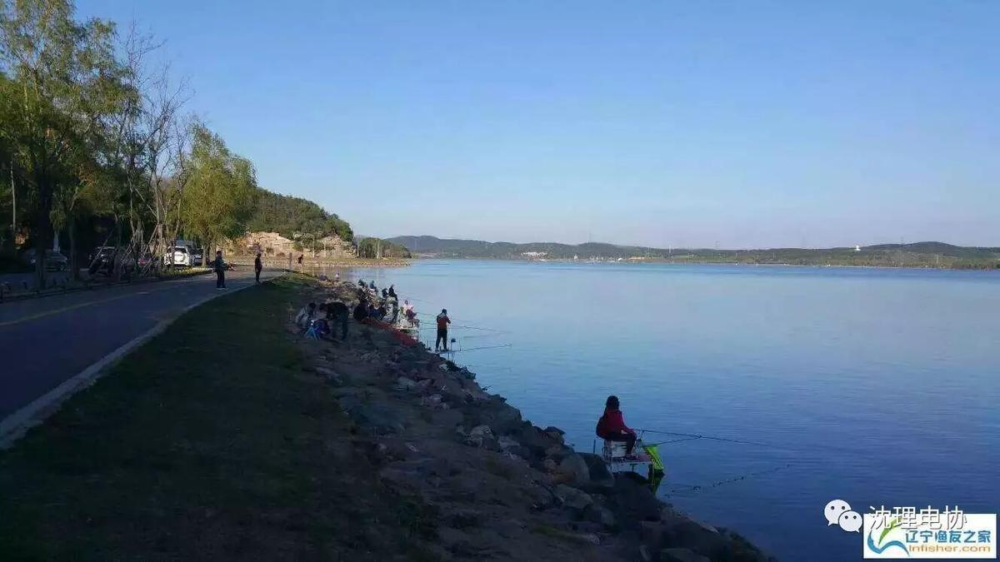
进入棋盘上就可以环湖骑行了，秀湖宁静而深邃，沿途风景美不胜收，一路下来满眼风光，连心情都变得美丽了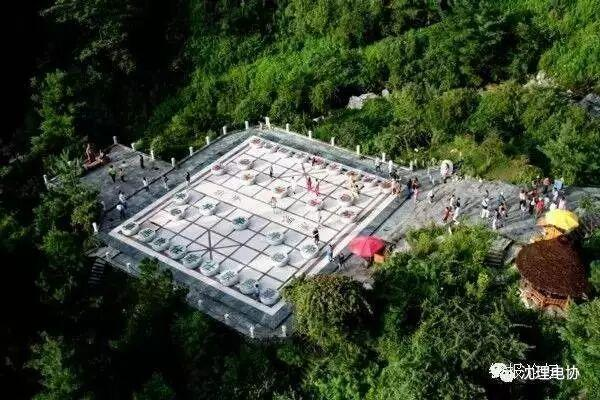
Ps：这条道路行车难度适中，不过车辆较多，骑车需注意安全
优点：环境优美，可以欣赏环湖之美。
适合人群：入门型骑手
骑行时长：1-2小时
浑河两岸
I HOPE YOU LIKE IT
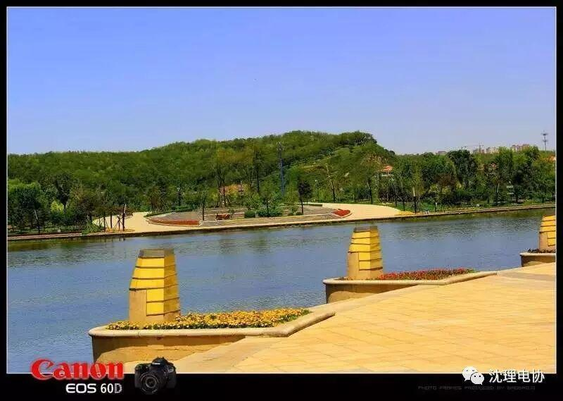
如果一定要在市内选一条骑行道路，那么浑河沿岸一定是首选
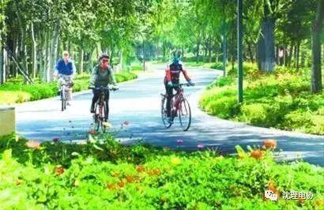
北岸贯穿浑河晚渡公园，罗士圈生态公园，五里河公园，生态环境好，路面平坦，空气新鲜，沿途景观更是让人享受
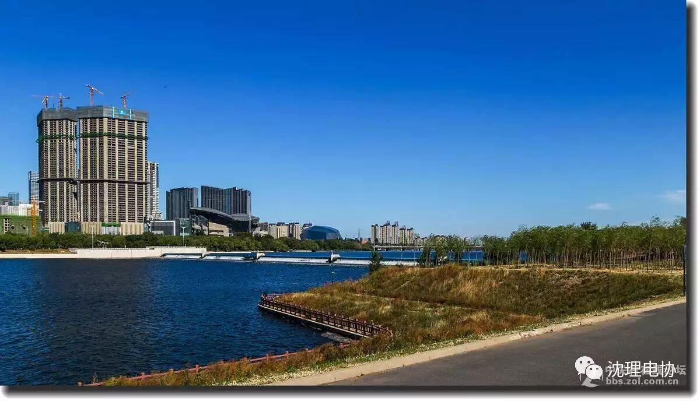
优点：少机动车，少行人，景色优美，有小吃店
适合人群：入门型骑手
骑行时长：1-2小时
蒲河生态廊道

I HOPE YOU LIKE IT
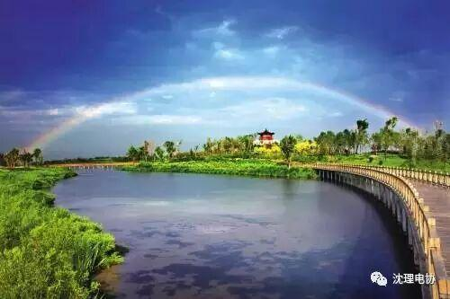
“一河三湖多湿地，两岸六区十八景”说的就是蒲河生态廊道
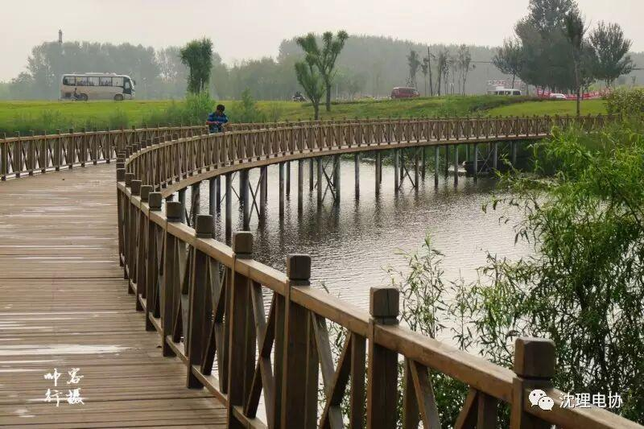
优点：走马观花，美不胜收
适合人群：减肥型骑手
骑行时间：1天
环丁香湖

I HOPE YOU LIKE IT
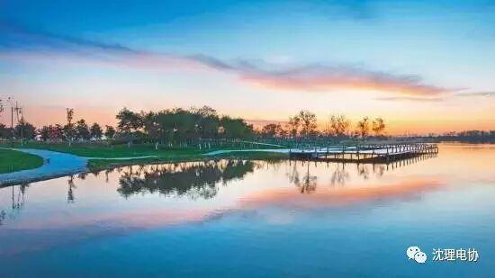
丁香湖也是备受骑行者青睐，湖水荡漾，树木成荫，疲惫之余也可以就近在湖边的树下休息，优哉游哉蹬着车，多么惬意的生活
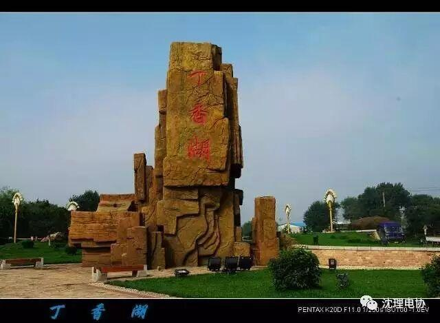
优点：避暑休闲，累了换可以休息
适合人群：初级骑手
骑行时间：2小时
百里环城运河带状公园

I HOPE YOU LIKE IT
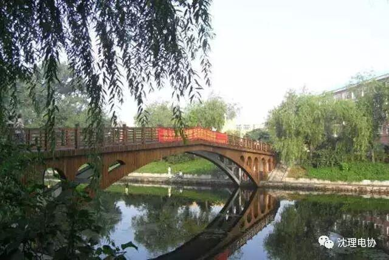
公园内景致优美，可以边骑车边游览，途中换可以就近上道
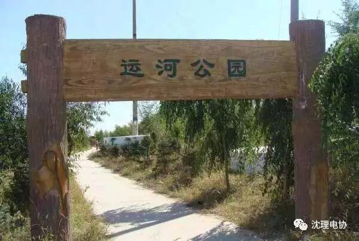
要是从北陵大街进入，途中经过的场景变换莫测，中式的亭台楼阁，仿欧式的建筑，流水，喷泉，瀑布，一路上充满了移步换景的奇妙
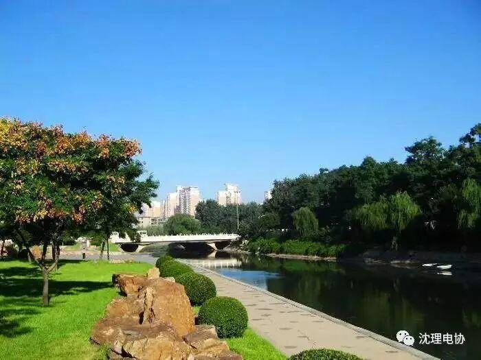
优点：精品公园多，景致好
适合人群：观光型骑手
辽河七星湿地公园

I HOPE LIKE IT
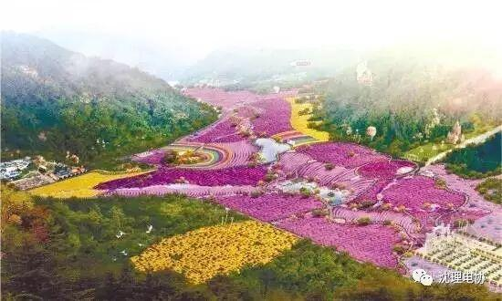
沿途一望无际的无公害示范水稻田，春夏时节，翠绿欲滴，空气清新
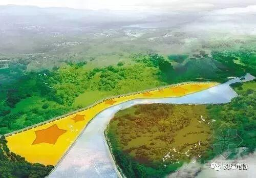
优点：骑行游乐一条龙
适合人群：挑战自我型选手
骑行时间：1天
骑行应该注意一些什么呢？
1：尽量选择一些机动车少的道路，与货车并行时记得要减速
2：有条件的话尽量穿戴头盔，手套等，避免受伤
3：每次出行记得带处理伤口的药物和修理自行车的工具，以防万一
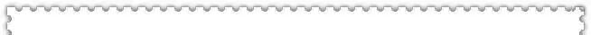
今天小编就与大家分享这么多，大家可以唤三五电协好友，骑着单车出发喽！
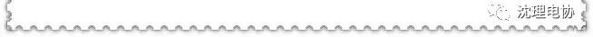
编辑--王宁